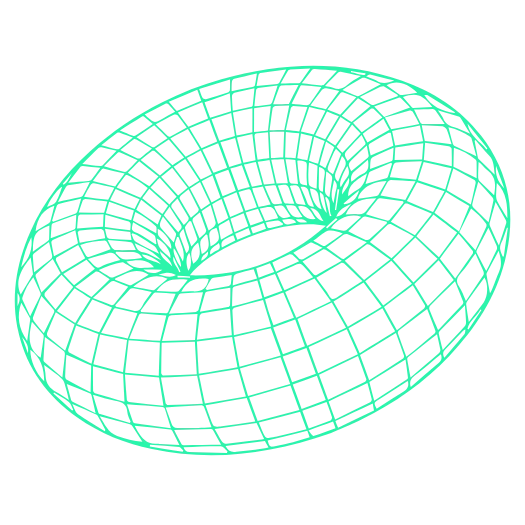

Personal Blog

Spoofing SFP-DKIM-DMARK
Spoofing + vulnerabilities in SPF, DKIM, DMARC authentication protocols

Offensive OSINT Methodology
Methodologies to perform OSINT in the recognition of web applications

Osint Pentester Role
The role of the OSINT Pentester within the intelligence and reconnaissance phase for penetration testing